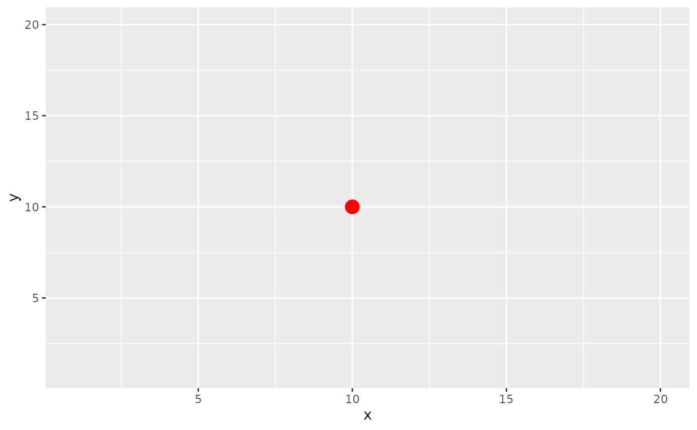
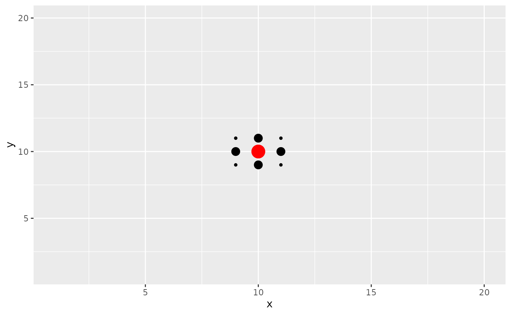

Effective Niche Calculation
Effective_Niche_Calculation.RmdCalculation of the Effective Niche
Calculating the effective niche for a given index cell consists of three steps
- Calculating the distance between the index cell and every other cell in the sample
- Transforming distances to kernel similarities using a gaussian kernel with kernel bandwidth \(\sigma\)
- Define the effective niche for niche cell \(n\) as the sum of kernel similarities between the index cell and cells of type \(n\)
We can perform effective niche calculations using the function ‘CalculateEffectiveNiche’ which takes in two arguments
Arguments
- object: A niche-DE object
- cutoff: The minimum kernel similarity allowable. Similarities below this value are truncated to 0. Default value 0.05.
NDE_obj = CalculateEffectiveNiche(NDE_obj)Suggestions on choice of kernel bandwidth
Choosing a reasonable sigma vector is critical to generating robust
and interpretable results.Sigma essentially determines what range of
neighboring spots contribute towards the effective niche. Small values
of sigma ensure that only close neighboring spots are considered while
large values of sigma result in effective niches that are smooth across
large regions of the tissue.
To see what this looks like, I will generate a grid of values and show
what spots contribute to the effective niche of the middle spot. The
size of the spot corresponds to its relative importance. Below is a plot
of the spatial coordinates of the grid with the middle spot colored
red.
Code for generating coordinate plot
library(ggplot2)
#generate coordiantes
coord = expand.grid(c(1:20),c(1:20))
colnames(coord) = c('x','y')
#get distance matrix
D = as.matrix(dist(coord,method = 'euclidean',diag = T))
#extract center distances
D = D[190,]
#make center circle red to distinguish
red = rep('black',length(D))
red[190] = 'red'
#make dataframe
coord = data.frame(coord,D,red)
ggplot(coord,aes(x,y,color = red))+geom_point()+
scale_color_manual(red, values = c("black", "red"))+ theme(legend.position="none")We first see what happens if the kernel bandwidth is very small. We
see that the only spot that contributes to the effective niche is the
middle spot itself. This may be appropriate if the spot can contain many
cells like in Visium data.
Code for generating plot with small sigma
#input your own sigma value
sigma = 0.001
#compute kernel similarities
coord_sigma_small = coord
coord_sigma_small$D = exp(-coord_sigma_small$D^2/sigma^2)
#make small similarities 0
coord_sigma_small$D[coord_sigma_small$D<0.05] = 0
#plot similarities (size of dot = bigger similarity)
ggplot(coord_sigma_small,aes(x,y,size=ifelse(D==0, NA, D),color = red))+geom_point()+
scale_color_manual(red, values = c("black", "red"))+ theme(legend.position="none")
#> Warning: Removed 399 rows containing missing values (`geom_point()`).
We now see what happens if the kernel bandwidth is equivalent to the
distance between neighboring spots. We see that neighboring spots now
also contribute to the effective niche. This value may be appropriate if
we believe that niche patterns only depend on the closest neighbors of a
spot.
Code for generating plot with medium sigma
#input your own sigma value
sigma = 1
#compute kernel similarities
coord_sigma_small = coord
coord_sigma_small$D = exp(-coord_sigma_small$D^2/sigma^2)
#make small similarities 0
coord_sigma_small$D[coord_sigma_small$D<0.05] = 0
#plot similarities (size of dot = bigger similarity)
ggplot(coord_sigma_small,aes(x,y,size=ifelse(D==0, NA, D),color = red))+geom_point()+
scale_color_manual(red, values = c("black", "red"))+ theme(legend.position="none")
#> Warning: Removed 391 rows containing missing values (`geom_point()`).
We now see what happens if the kernel bandwidth is large, say 1/4th
of the length of the tissue. Many spots now contribute to the effective
niche. Additionally,it looks as though there is nearly equal
contribution for many cells near the center. This value may be
appropriate if we believe that niche patterns only depend on tissue
level patterns in niche.
Code for generating plot with large sigma
#input your own sigma value
sigma = 10
#compute kernel similarities
coord_sigma_small = coord
coord_sigma_small$D = exp(-coord_sigma_small$D^2/sigma^2)
#make small similarities 0
coord_sigma_small$D[coord_sigma_small$D<0.05] = 0
#plot similarities (size of dot = bigger similarity)
ggplot(coord_sigma_small,aes(x,y,size=ifelse(D==0, NA, D),color = red))+geom_point()+
scale_color_manual(red, values = c("black", "red"))+ theme(legend.position="none")Clearly the choice of sigma can affect what niche patterns you will find. For spot data which can contain many cells like Visium, we recommend using a sigma vector that contains a small value, a value equal to the distance between neighboring spots, and a value somewhat larger, say 2-3 times the distance between neighboring spots.